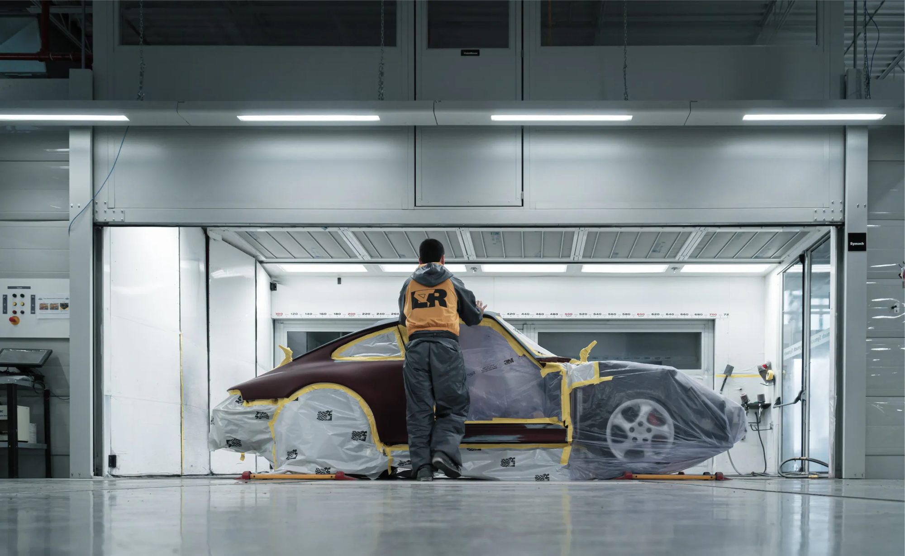
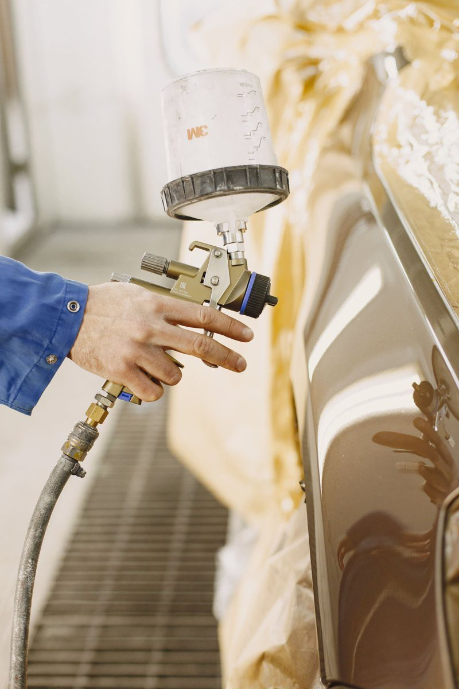

Swirl Mark Removal
The fine circular scratches from car washes and improper drying, polished out so the finish reflects cleanly instead of hazing in sunlight.
↗Most dull, hazy, swirled finishes are healthy paint hiding under a damaged surface layer. Machine correction removes that layer and brings the gloss back without any refinishing.
Those fine circular scratches you see in direct sunlight are thousands of shallow cuts in the clear coat, mostly from washing. Polish that surface flat and the light reflects evenly again.
The single biggest cause is the automatic car wash. Spinning brushes drag grit across the paint on every pass. Improper hand washing does the same thing with a dirty mitt or a single bucket. Over a few years the damage accumulates into the hazy, spider-webbed look that makes a car appear old.
Correction is a machine polishing process. Compound and pad combinations remove a microscopic amount of clear coat, taking the surface down past the depth of the scratches so it becomes flat and reflects light cleanly rather than scattering it.
It has real limits and they are worth understanding. Clear coat is finite. It can only be corrected so many times over a vehicle's life, and a scratch you can catch with a fingernail is through the clear and cannot be polished out. Those need refinishing.
Correction is also the required first step before ceramic coating or PPF. Both lock in whatever is beneath them, so coating swirled paint means keeping swirled paint for years.
Scoped to the paint's condition and what you want out of the finish.
The fine circular scratches from car washes and improper drying, polished out so the finish reflects cleanly instead of hazing in sunlight.
↗Chalky, faded paint on older vehicles and sun-exposed panels, cut back to expose the healthy clear coat underneath.
↗Light scratches that have not broken through the clear coat can be reduced or removed. Deeper ones are identified and quoted as refinishing.
↗Multi-stage cut and polish for maximum depth and clarity, on both daily drivers and show-condition vehicles.
↗Required before ceramic coating or PPF, since both seal in whatever surface they are applied over.
↗Holograms and buffer trails left by a previous rushed polish, corrected properly with the right pad and compound sequence.
↗Run a fingernail lightly across the scratch. If it catches, the damage is through the clear coat and polishing will not remove it, because there is nothing left to level down to. If it glides over, it is almost certainly correctable. We assess every panel under proper lighting and tell you which category yours falls into before quoting.
Paint is evaluated under corrected lighting, which shows defects that disappear in a garage or on an overcast day.
Wash, chemical decon and clay treatment lift bonded contaminants that polishing alone would just grind into the surface.
Compound and pad combinations are test-spotted, then the correct sequence is run across every panel.
The finish is refined to remove any polishing haze, then sealed, coated or left ready for PPF.
Looking for paint correction near North Haven, CT? Exclusive Auto Lab handles swirl mark removal, oxidation repair, scratch reduction, buffer trail correction and multi-stage gloss restoration on all makes and models.
Correction is also the required first step before ceramic coating or paint protection film, both of which lock in whatever surface they cover. We handle all three in-house.
Serving North Haven, New Haven, Hamden, Wallingford, Cheshire, Branford, East Haven, West Haven, Meriden and surrounding Connecticut communities.
Buffing is a loose term that often means a quick pass with a filler-heavy product that temporarily hides swirls and washes out in a few weeks. Correction actually levels the clear coat so the defects are gone rather than masked.
No. If a scratch catches your fingernail it has gone through the clear coat and there is nothing left to level down to. That needs refinishing. Anything shallower is usually correctable.
Clear coat is a finite layer, and each correction removes a small amount. A well-maintained vehicle can handle it a few times over its life. This is exactly why protecting the finish afterward with coating or PPF is worth doing.
Only if they get put back. They come from washing, so switching to hand washing with a two-bucket method, or at minimum a touchless wash instead of a brush tunnel, keeps corrected paint corrected. A ceramic coating makes safe washing considerably easier.
In almost every case, yes. A coating locks in whatever is under it for years. Coating swirled paint means living with swirled paint. Brand-new vehicles need the least correction, which is why coating a new car is the easiest scenario.
It is labor-intensive and depends on paint condition and how many stages the finish needs. A single-stage polish on decent paint is much quicker than multi-stage correction on a neglected vehicle. We give you a realistic timeline after inspecting it.
Reference images showing the kind of work involved. Follow our Instagram for current jobs coming through the shop.




Call, text photos, or request an appointment online. We will tell you what to expect before you bring the vehicle in.